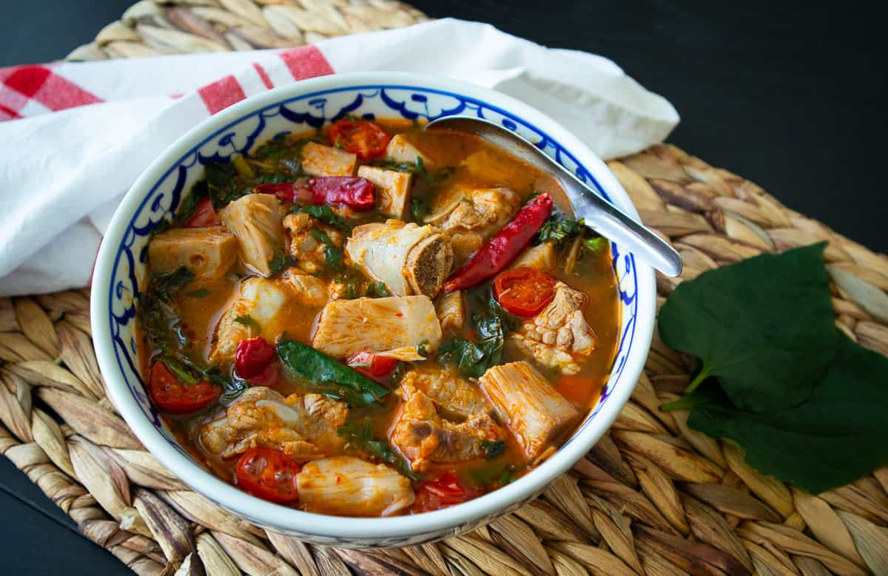

Gaeng Kanoon - Jackfruit Curry

Description
This is a very easy to cook Northern Thai jungle curry. This disk is very
popular to eat at important events such as weddings and New Year
celebrations.
Ingredients
- ½ oz dried red chilies
- 6 cloves garlic
- ½ chopped shallots
- 2-3 teaspoons fermented shrimp paste
- 1 cup halved cherry tomatoes
- 4 cups water
- 1 lb pork spare ribs, cut into pieces
- 1-2 tablespoons fish sauce
- 1 can young green jackfruit (20 oz)
- 20 wild betel leaves
- 1 cup Cha-om
- Jasmine rice for serving
Steps
-
Add the ribs to a large pot. Add the water and 1 tablespoon of the fish
sauce and bring to a simmer over high heat. Then, lower the heat to
maintain a simmer.
-
At the same time, drain and rinse the jackfruit. Cut into small pieces
and add them to the pot.
-
While the ribs cook, make the curry paste. Grind the dried chilies into
powder in a spice grinder and set aside. In a mortar and pestle, pound
the garlic and shallots into a rough paste, combine with the chilies
when the mixture feels wet. Once you have a rough paste, add the shrimp
paste and pound to mix.
-
Slim the top of the broth, and then add the curry paste. Stirk and mix
while continuing to simmer until the pork is very tender. This should
take 45 minutes to an hour depending on how thick the ribs are.
- Next, add the greens and tomatoes and cook for 1-2 minutes.
- Serve alongside jasmine rice.
Back to Homepage